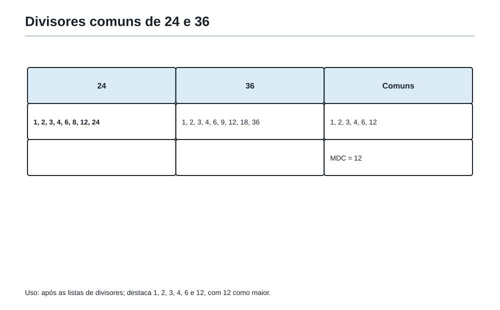
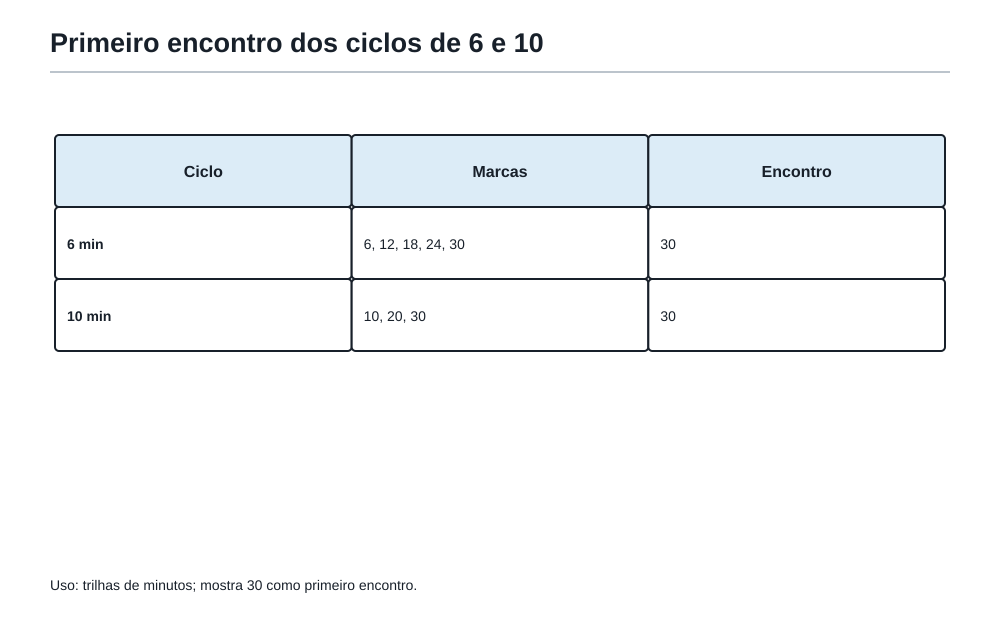
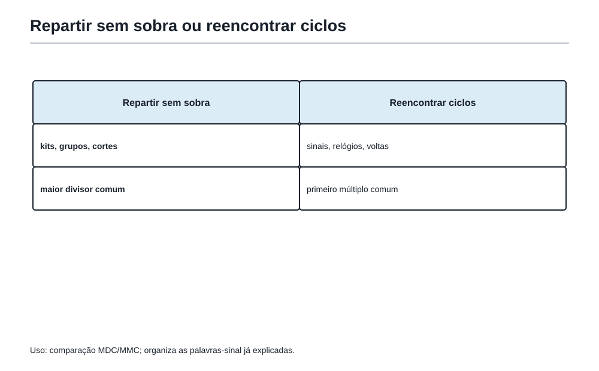

Quando os divisores se encontram
1. Depois dos restos e dos ciclos
Felipe saiu da sala dos restos com uma descoberta importante: uma sobra não é apenas o que ficou de fora da conta.
A sobra pode dizer posição.
Pode revelar um ciclo.
Pode mostrar que uma porta é impossível de abrir.
Pode avisar que dois acontecimentos vão se reencontrar depois de algumas voltas.
No corredor seguinte da Academia do Raciocínio, havia duas trilhas desenhadas no chão.
A primeira descia por pequenos degraus:
48, 24, 12, 6, 3, 1
A segunda subia por marcas de passos:
6, 12, 18, 24, 30, 36...
Felipe olhou para as duas e perguntou:
— Uma trilha está dividindo e a outra está multiplicando?
O Professor sorriu.
— Sim. E hoje você vai aprender quando deve olhar para baixo, procurando pedaços que servem, e quando deve olhar para frente, procurando encontros que ainda vão acontecer.
A coruja da Academia pousou sobre uma placa:
Quando o problema fala de dividir sem sobrar, procure divisores.
Quando o problema fala de reencontros, repetições e ciclos, procure múltiplos.
Era a ponte natural entre os três capítulos anteriores.
No Capítulo 2, os números foram vistos por dentro: divisores, múltiplos, primos e fatores.
No Capítulo 3, as sobras viraram ciclos, relógios e calendários.
Agora, no Capítulo 4 harmonizado, essas ideias se encontram.
2. Dois tipos de encaixe
O Professor colocou sobre a mesa 24 medalhas douradas e 36 cartões de treino.
— Quero montar kits iguais, sem sobrar nenhuma medalha e sem sobrar nenhum cartão. Cada kit deve ter a mesma quantidade de medalhas e a mesma quantidade de cartões. Qual é o maior número de kits que posso montar?
Felipe começou a imaginar caixas.
Se fossem 2 kits, daria certo: cada kit receberia 12 medalhas e 18 cartões.
Se fossem 3 kits, também daria certo: cada kit receberia 8 medalhas e 12 cartões.
Se fossem 4 kits, também: 6 medalhas e 9 cartões.
Mas se fossem 5 kits, 24 não dividiria certinho.
A pergunta escondida não era:
— Quanto é 24 + 36?
Nem:
— Quanto é 36 − 24?
A pergunta real era:
— Qual quantidade divide 24 e 36 ao mesmo tempo, sem deixar sobra?
Essa é uma pergunta de divisor comum.
Agora o Professor acendeu duas lanternas.
A lanterna azul piscava a cada 6 segundos.
A lanterna dourada piscava a cada 8 segundos.
As duas piscaram juntas agora.
— Depois de quantos segundos elas vão piscar juntas novamente?
Felipe percebeu que a pergunta mudou.
Agora não se tratava de repartir 6 e 8 em pedaços iguais.
Tratava-se de esperar uma quantidade de tempo que fosse alcançada pelos dois ritmos:
- 6, 12, 18, 24, 30...
- 8, 16, 24, 32...
O primeiro encontro depois do começo era 24.
Essa é uma pergunta de múltiplo comum.
A mesma família de números apareceu nos dois problemas.
Mas o tipo de encaixe era diferente.
No primeiro, as quantidades precisavam ser divididas.
No segundo, os ciclos precisavam se reencontrar.
3. O maior pedaço que serve para todos

Vamos voltar aos kits.
Há 24 medalhas e 36 cartões.
Queremos o maior número de kits iguais, sem sobra.
Para uma quantidade de kits funcionar, ela precisa dividir 24 e 36 ao mesmo tempo.
Então podemos listar os divisores.
Divisores de 24:
1, 2, 3, 4, 6, 8, 12, 24
Divisores de 36:
1, 2, 3, 4, 6, 9, 12, 18, 36
Os divisores comuns são:
1, 2, 3, 4, 6, 12
O maior deles é 12.
Então é possível montar 12 kits iguais.
Cada kit terá:
24 ÷ 12 = 2 medalhas
36 ÷ 12 = 3 cartões
O Professor escreveu no quadro:
O maior divisor que dois números têm em comum chama-se máximo divisor comum.
Depois apagou metade da frase e deixou apenas:
MDC
Felipe riu.
— Então o nome apareceu depois da ideia.
— Exatamente — disse o Professor. — Primeiro você entendeu o problema. Depois ganhou uma abreviação para conversar com ele.
4. O nome vem depois: MDC
MDC significa máximo divisor comum.
Máximo porque queremos o maior.
Divisor porque precisa dividir sem sobra.
Comum porque precisa servir para mais de uma quantidade ao mesmo tempo.
Mas a palavra mais importante não é “máximo”.
É “divisor”.
Se o problema fala em:
- cortar em pedaços iguais;
- formar grupos iguais;
- montar kits iguais;
- dividir várias quantidades sem sobra;
- encontrar o maior tamanho possível;
- organizar caixas iguais usando tudo;
- separar equipes com a mesma composição;
então a pergunta provavelmente está apontando para divisores comuns.
E, se ela pede o maior tamanho, o maior número de grupos ou o maior pedaço possível, o MDC costuma aparecer.
A coruja da Academia deixou uma frase curta:
MDC é o maior pedaço que cabe certinho em todas as quantidades.
5. Listar funciona, mas às vezes cansa
Para 24 e 36, listar divisores foi tranquilo.
Mas imagine que o problema fale de 84 e 126.
Ainda dá para listar, mas a lista começa a cansar.
Divisores de 84:
1, 2, 3, 4, 6, 7, 12, 14, 21, 28, 42, 84
Divisores de 126:
1, 2, 3, 6, 7, 9, 14, 18, 21, 42, 63, 126
Divisores comuns:
1, 2, 3, 6, 7, 14, 21, 42
O maior é 42.
Então:
MDC(84, 126) = 42
Funciona.
Mas existe uma forma mais organizada de enxergar isso usando a desmontagem dos números por dentro.
Essa ideia já apareceu no Capítulo 2: fatoração em primos.
Vamos desmontar:
84 = 2 × 2 × 3 × 7
126 = 2 × 3 × 3 × 7
Agora Felipe procurou o que os dois números têm em comum.
Nos dois aparece um 2.
Nos dois aparece um 3.
Nos dois aparece um 7.
Então o pedaço comum é:
2 × 3 × 7 = 42
O MDC é 42.
A fatoração não é mágica.
Ela apenas mostra as peças internas dos números.
Para encontrar o maior pedaço comum, usamos as peças que aparecem nos dois.
6. Um cuidado importante com fatores repetidos
A coruja apagou o quadro e escreveu:
72 = 2 × 2 × 2 × 3 × 3
120 = 2 × 2 × 2 × 3 × 5
— Qual é o MDC? — perguntou ela.
Felipe respondeu depressa:
— Os dois têm 2 e 3, então 2 × 3 = 6.
O Professor não disse que estava errado. Apenas perguntou:
— Eles têm só um 2 em comum?
Felipe olhou melhor.
O 72 tem três fatores 2.
O 120 também tem três fatores 2.
Então os três fatores 2 são comuns.
Ambos também têm um fator 3.
Logo:
MDC(72, 120) = 2 × 2 × 2 × 3 = 24
O erro de Felipe foi comum: ele olhou apenas para o tipo de fator, não para a quantidade de vezes que ele aparece.
Na decomposição em primos, fatores repetidos contam.
A pergunta é:
Quais peças aparecem nos dois números, respeitando a quantidade que aparece em cada um?
7. Quando o problema pede MDC sem dizer “MDC”
Problemas olímpicos raramente dizem:
— Calcule o MDC.
Eles preferem esconder a pergunta dentro de uma história.
Veja.
A Academia recebeu 48 lápis e 60 cadernos para distribuir em caixas iguais. Todas as caixas devem ter a mesma quantidade de lápis e a mesma quantidade de cadernos. Nenhum material pode sobrar. Qual é o maior número de caixas que podem ser montadas?
O enunciado não disse “MDC”.
Mas as pistas são fortes:
- caixas iguais;
- usar todos os lápis;
- usar todos os cadernos;
- nada pode sobrar;
- maior número de caixas.
A quantidade de caixas deve dividir 48 e 60.
Então procuramos o maior divisor comum.
Divisores comuns de 48 e 60:
1, 2, 3, 4, 6, 12
O maior é 12.
Logo, podem ser montadas 12 caixas.
Cada caixa terá:
48 ÷ 12 = 4 lápis
60 ÷ 12 = 5 cadernos
A resposta não é apenas “12”.
A solução precisa mostrar por que 12 é possível e por que não dá para fazer mais caixas.
É por isso que o MDC aparece: ele garante o maior número de caixas sem sobra.
8. O outro lado: quando os múltiplos se encontram

Agora o Professor mudou a mesa.
Desta vez não havia caixas.
Havia dois robôs de treino andando em uma pista circular.
O robô azul completava uma volta a cada 6 minutos.
O robô dourado completava uma volta a cada 10 minutos.
Eles partiram juntos da linha inicial.
— Depois de quantos minutos eles estarão juntos na linha inicial novamente?
Felipe pensou nos múltiplos.
O robô azul volta à linha inicial depois de:
6, 12, 18, 24, 30, 36, 42, 48, 54, 60...
O robô dourado volta depois de:
10, 20, 30, 40, 50, 60...
O primeiro tempo que aparece nas duas listas é 30.
Então os robôs se reencontram na linha inicial depois de 30 minutos.
Aqui não faria sentido procurar o maior divisor comum de 6 e 10.
O MDC de 6 e 10 é 2.
Mas 2 minutos não é tempo suficiente para nenhum dos robôs completar uma volta.
A pergunta não é sobre repartir.
É sobre reencontrar.
E reencontros moram nos múltiplos.
9. O nome vem depois: MMC
O menor múltiplo positivo que dois números têm em comum chama-se mínimo múltiplo comum.
Ou, de forma curta:
MMC
Mínimo porque queremos o primeiro encontro depois do início.
Múltiplo porque estamos olhando para passos, voltas, ciclos ou repetições.
Comum porque o mesmo tempo, posição ou quantidade precisa servir para os dois ritmos.
Se o problema fala em:
- duas pessoas que fazem algo em ritmos diferentes;
- lanternas que piscam;
- sinos que tocam;
- ônibus que saem de tempos em tempos;
- aulas que se repetem em calendários diferentes;
- engrenagens que voltam à posição inicial;
- ciclos que precisam coincidir;
- o primeiro momento em que algo acontece junto novamente;
então a pergunta provavelmente aponta para múltiplos comuns.
A coruja resumiu:
MMC é o primeiro reencontro de trilhas que andam em passos diferentes.
10. Listando múltiplos com cuidado
Vamos procurar o MMC de 8 e 12.
Múltiplos de 8:
8, 16, 24, 32, 40, 48...
Múltiplos de 12:
12, 24, 36, 48...
O primeiro múltiplo comum positivo é 24.
Então:
MMC(8, 12) = 24
Um erro comum é parar no primeiro número que aparece em uma das listas e “parece grande o bastante”.
Mas o número precisa aparecer nas duas listas.
Outro erro comum é esquecer que 0 é múltiplo de qualquer número, mas não serve para o “próximo reencontro” depois do início.
Se duas lanternas piscam juntas no instante 0, queremos o próximo instante positivo.
Por isso, em problemas de reencontro, começamos a contar depois do começo.
11. MMC por fatoração: juntar tudo sem repetir demais
A fatoração também ajuda no MMC.
Vamos calcular o MMC de 18 e 24.
Primeiro desmontamos:
18 = 2 × 3 × 3
24 = 2 × 2 × 2 × 3
O MMC precisa ser um número que contenha as peças necessárias para ser múltiplo de 18 e também de 24.
Para ser múltiplo de 18, precisa ter:
2 × 3 × 3
Para ser múltiplo de 24, precisa ter:
2 × 2 × 2 × 3
Então juntamos as maiores necessidades:
- três fatores 2, porque 24 precisa de três;
- dois fatores 3, porque 18 precisa de dois.
Logo:
MMC(18, 24) = 2 × 2 × 2 × 3 × 3 = 72
Felipe percebeu a diferença.
No MDC, pegamos apenas as peças comuns.
No MMC, pegamos peças suficientes para cobrir os dois números.
O Professor escreveu:
MDC: o que os dois têm em comum.
MMC: o que é suficiente para os dois caberem.
12. A armadilha: MDC e MMC não são a mesma coisa

A armadilha mais perigosa deste capítulo é escolher a ferramenta pelo nome bonito, e não pela pergunta do problema.
Veja estes dois enunciados:
-
Tenho 18 adesivos azuis e 24 adesivos dourados. Quero montar o maior número possível de envelopes iguais, sem sobrar adesivos. Quantos envelopes posso montar?
-
Um sinal azul toca a cada 18 minutos e um sinal dourado toca a cada 24 minutos. Eles tocaram juntos agora. Daqui a quantos minutos tocarão juntos novamente?
Os números são os mesmos: 18 e 24.
Mas a pergunta é diferente.
No primeiro, queremos dividir 18 e 24 sem sobra.
Então:
MDC(18, 24) = 6
Podemos montar 6 envelopes.
No segundo, queremos o primeiro reencontro dos ciclos de 18 e 24 minutos.
Então:
MMC(18, 24) = 72
Os sinais tocarão juntos novamente depois de 72 minutos.
Mesmos números.
Ferramentas diferentes.
Porque a pergunta escondida mudou.
13. A pergunta que decide tudo
Felipe abriu a Mochila do Matemático e encontrou duas etiquetas novas.
A primeira dizia:
Dividir sem sobrar.
A segunda dizia:
Reencontrar ciclos.
O Professor pediu que ele completasse mentalmente:
Se o problema quer dividir várias quantidades em partes iguais, sem sobra, eu procuro...
Felipe respondeu:
— Divisores comuns. E, se quer o maior, MDC.
Se o problema quer saber quando dois ritmos acontecem juntos de novo, eu procuro...
— Múltiplos comuns. E, se quer o primeiro encontro, MMC.
A coruja bateu as asas.
— Agora você tem a pergunta que decide tudo.
Antes de calcular, pergunte:
Estou repartindo quantidades ou esperando ciclos se reencontrarem?
Essa pergunta evita muitas contas erradas.
14. Uma descoberta elegante
O Professor colocou no quadro:
18 e 24
Felipe já sabia:
MDC(18, 24) = 6
MMC(18, 24) = 72
O Professor então multiplicou:
18 × 24 = 432
6 × 72 = 432
Felipe arregalou os olhos.
— Deu igual!
— Para dois números positivos, isso sempre acontece:
primeiro número × segundo número = MDC × MMC
Mas o Professor levantou um dedo.
— Cuidado. Essa relação é elegante, mas não substitui a leitura do problema. Ela ajuda a conferir, a descobrir um valor quando o outro já é conhecido, ou a enxergar a ligação entre as ferramentas. Mas a escolha entre MDC e MMC ainda nasce da pergunta.
O livro não quer que Felipe decore uma fórmula antes de entender a sala.
Quer que ele veja a arquitetura.
O MDC olha para o que dois números compartilham por dentro.
O MMC olha para o primeiro lugar onde as trilhas dos múltiplos se encontram.
São ferramentas diferentes da mesma família.
OBMEP15. Problema em estilo OBMEP — As caixas da Academia
A Academia recebeu 72 lápis, 90 borrachas e 108 cartões de treino. O Professor quer montar o maior número possível de caixas iguais, usando todos os materiais. Todas as caixas devem ter a mesma quantidade de lápis, a mesma quantidade de borrachas e a mesma quantidade de cartões.
Qual é o maior número de caixas que podem ser montadas? Quantos itens de cada tipo haverá em cada caixa?
Primeira jogada
A frase “maior número possível de caixas iguais, usando todos os materiais” aponta para divisão sem sobra.
Então procuramos o MDC de 72, 90 e 108.
Ver solução
Solução
Vamos fatorar:
72 = 2 × 2 × 2 × 3 × 3
90 = 2 × 3 × 3 × 5
108 = 2 × 2 × 3 × 3 × 3
As peças comuns aos três números são:
2 × 3 × 3 = 18
Logo:
MDC(72, 90, 108) = 18
Podem ser montadas 18 caixas.
Agora calculamos o conteúdo de cada caixa:
72 ÷ 18 = 4 lápis
90 ÷ 18 = 5 borrachas
108 ÷ 18 = 6 cartões
Resposta
O maior número possível é 18 caixas.
Cada caixa terá 4 lápis, 5 borrachas e 6 cartões.
Revisão da Academia
A resposta faz sentido porque 18 divide as três quantidades sem deixar sobra.
E é o maior divisor comum, então não é possível montar mais caixas iguais usando tudo.
OBMEP16. Problema em estilo OBMEP — O calendário das aulas especiais
Na Academia, a aula de lógica acontece a cada 6 dias, a aula de geometria acontece a cada 10 dias e a aula de restos acontece a cada 15 dias. Hoje as três aulas aconteceram no mesmo dia.
Daqui a quantos dias as três aulas acontecerão juntas novamente?
Primeira jogada
A pergunta fala de eventos que se repetem em ciclos.
Não estamos repartindo 6, 10 e 15.
Estamos procurando o primeiro reencontro.
Então precisamos do MMC de 6, 10 e 15.
Ver solução
Solução
Fatorando:
6 = 2 × 3
10 = 2 × 5
15 = 3 × 5
Para ser múltiplo dos três, o número precisa ter as peças necessárias:
2 × 3 × 5 = 30
Logo:
MMC(6, 10, 15) = 30
Resposta
As três aulas acontecerão juntas novamente daqui a 30 dias.
Revisão da Academia
30 é múltiplo de 6, de 10 e de 15.
Além disso, é o primeiro múltiplo positivo comum aos três.
OBMEP17. Problema em estilo OBMEP — Dois pedidos parecidos
Resolva os dois itens e explique por que as ferramentas são diferentes.
a) O Professor tem 40 fichas azuis e 56 fichas douradas. Ele quer separar tudo no maior número possível de grupos iguais, sem sobrar fichas. Quantos grupos pode formar?
b) Uma luz azul pisca a cada 40 segundos e uma luz dourada pisca a cada 56 segundos. Elas piscaram juntas agora. Depois de quantos segundos piscarão juntas novamente?
Ver solução
Solução do item a
O item a fala de grupos iguais e nenhuma sobra.
Então procuramos o MDC de 40 e 56.
40 = 2 × 2 × 2 × 5
56 = 2 × 2 × 2 × 7
Peças comuns:
2 × 2 × 2 = 8
Logo:
MDC(40, 56) = 8
O Professor pode formar 8 grupos.
Cada grupo terá:
40 ÷ 8 = 5 fichas azuis
56 ÷ 8 = 7 fichas douradas
Ver solução
Solução do item b
O item b fala de luzes que piscam em ciclos e pergunta quando piscam juntas novamente.
Então procuramos o MMC de 40 e 56.
Para o MMC, precisamos juntar as maiores necessidades:
40 = 2 × 2 × 2 × 5
56 = 2 × 2 × 2 × 7
Precisamos de três fatores 2, um fator 5 e um fator 7:
MMC(40, 56) = 2 × 2 × 2 × 5 × 7 = 280
As luzes piscarão juntas novamente depois de 280 segundos.
Revisão da Academia
Os números eram os mesmos.
Mas o item a pedia divisão sem sobra.
O item b pedia reencontro de ciclos.
Por isso as ferramentas mudaram.
OBMEP18. Problema em estilo OBMEP — A sala dos robôs
Dois robôs andam sobre uma pista circular e partem juntos da porta dourada. O robô A passa novamente pela porta a cada 12 minutos. O robô B passa novamente pela porta a cada 18 minutos.
Depois de quanto tempo eles passarão juntos pela porta dourada pela terceira vez, contando também o instante da partida?
Primeira jogada
A pergunta fala de ciclos e reencontros.
O primeiro encontro contado é o instante da partida.
O segundo encontro será depois de um MMC.
O terceiro encontro será depois de dois MMCs.
Ver solução
Solução
Vamos calcular o MMC de 12 e 18.
12 = 2 × 2 × 3
18 = 2 × 3 × 3
Para o MMC, precisamos de dois fatores 2 e dois fatores 3:
MMC(12, 18) = 2 × 2 × 3 × 3 = 36
Os robôs se encontram na porta:
- no instante 0;
- depois de 36 minutos;
- depois de 72 minutos.
Resposta
Eles passarão juntos pela porta dourada pela terceira vez, contando a partida, depois de 72 minutos.
Revisão da Academia
A armadilha era contar “terceira vez” como se fosse apenas um MMC.
Mas, como a partida já conta como a primeira vez, o terceiro encontro acontece no segundo ciclo comum.
Oficina19. Oficina Olímpica 3 — Dividir ou reencontrar?
A Oficina desta sala não começa com uma conta.
Começa com uma escolha.
Em cada desafio, antes de resolver, pergunte:
É uma pergunta de dividir sem sobrar ou de reencontrar ciclos?
Desafio 1 — Pacotes de adesivos
Há 54 adesivos verdes e 72 adesivos amarelos. Queremos montar o maior número possível de pacotes iguais, usando todos os adesivos.
Quantos pacotes podem ser montados?
Solução.
Pacotes iguais, usar tudo e sem sobra: MDC.
54 = 2 × 3 × 3 × 3
72 = 2 × 2 × 2 × 3 × 3
Peças comuns:
2 × 3 × 3 = 18
Podem ser montados 18 pacotes.
Desafio 2 — Sinos da torre
Um sino toca a cada 9 minutos e outro toca a cada 12 minutos. Eles tocaram juntos agora.
Depois de quantos minutos tocarão juntos novamente?
Solução.
Sinos que se repetem: MMC.
9 = 3 × 3
12 = 2 × 2 × 3
MMC(9, 12) = 2 × 2 × 3 × 3 = 36
Tocarão juntos novamente depois de 36 minutos.
Desafio 3 — A maior fita igual
Duas fitas medem 84 cm e 126 cm. Queremos cortá-las em pedaços iguais, todos com o maior comprimento possível, sem sobrar fita.
Qual deve ser o comprimento de cada pedaço?
Solução.
Cortar em pedaços iguais, maior comprimento, sem sobra: MDC.
Já vimos:
MDC(84, 126) = 42
Cada pedaço deve medir 42 cm.
Desafio 4 — Três luzes
Três luzes piscam a cada 4, 6 e 10 segundos. Elas piscaram juntas agora.
Depois de quantos segundos piscarão juntas novamente?
Solução.
Luzes que piscam em ciclos: MMC.
4 = 2 × 2
6 = 2 × 3
10 = 2 × 5
Precisamos de:
2 × 2 × 3 × 5 = 60
As três luzes piscarão juntas novamente depois de 60 segundos.
Desafio 5 — Atividade aberta — A pergunta escondida
Explique por que os dois problemas abaixo não têm a mesma resposta, mesmo usando os números 30 e 45.
Critério de uma resposta completa: distinguir a pergunta de divisão sem sobra da pergunta de reencontro de ciclos e relacionar os resultados 15 e 90 às duas perguntas.
a) Dividir 30 medalhas e 45 cartões no maior número possível de kits iguais.
b) Dois eventos se repetem a cada 30 dias e 45 dias; hoje acontecem juntos.
Solução.
No item a, a pergunta é de dividir sem sobrar.
MDC(30, 45) = 15
São 15 kits.
No item b, a pergunta é de reencontro de ciclos.
30 = 2 × 3 × 5
45 = 3 × 3 × 5
MMC(30, 45) = 2 × 3 × 3 × 5 = 90
Os eventos se reencontram depois de 90 dias.
Mesmos números, perguntas diferentes.
20. As ferramentas da Mochila nesta sala
Felipe guardou novas ferramentas na Mochila do Matemático.
Não eram ferramentas isoladas.
Eram ferramentas de decisão.
- Procurar divisores comuns quando várias quantidades precisam ser repartidas sem sobra.
- Encontrar o maior divisor comum quando o problema pede o maior pedaço, maior número de grupos ou maior quantidade de pacotes iguais.
- Procurar múltiplos comuns quando há ciclos, ritmos, voltas ou repetições.
- Encontrar o mínimo múltiplo comum quando o problema pede o primeiro reencontro.
- Usar fatoração em primos para organizar MDC e MMC sem depender apenas de listas longas.
- Separar claramente perguntas de divisão e perguntas de reencontro.
- Conferir se a resposta combina com a história do problema.
O Professor fechou a Mochila e disse:
— O bom matemático não pergunta apenas “qual conta eu faço?”. Ele pergunta “que tipo de encaixe este problema está pedindo?”.
21. Figuras aplicadas no ponto de uso
As especificações de divisores, múltiplos e comparação MDC/MMC aparecem nas seções correspondentes. O quadro de múltiplos acompanha os ritmos de 6 e 10 minutos deste exemplo, preservando os dados do texto.
22. A frase da Academia
Dividir sem sobrar pede um divisor comum. Reencontrar ciclos pede um múltiplo comum.
23. Pergunta para amanhã
Quando a divisão não é perfeita, que tipo de número nasce?
A porta seguinte da Academia não tinha caixas, nem lanternas, nem robôs.
Tinha uma pizza desenhada em quatro partes.
Ao lado dela, uma pergunta simples:
Se nem sempre a divisão termina em número inteiro, como a matemática guarda os pedaços?
Felipe já sabia que a próxima sala não seria sobre fracasso da divisão.
Seria sobre uma nova forma de número.
A sala das frações estava aberta.